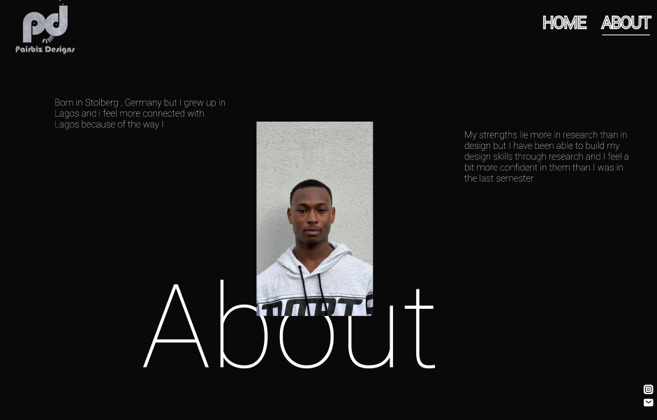

Personal Projects

LOGO DEVELOPMENT
I wanted to challenge myself, so I started working on a different logo than the one I did last semester. After several iterations, I felt like I couldn't find the right logo by just using letters. So, I decided to go a little deeper. After searching for different fonts, an idea came to me: to create a logo that not only includes the first letter of my personal brand (Pairbiz Designs) but also incorporates a smiley face. I brainstormed on the best font to use and ended up with Bauhaus 93, and the idea came to life. After the first couple of iterations, I asked for feedback from my peers. Many of them liked the idea, but I also received constructive feedback. They suggested that I should maybe make it look more like an emoji by adding the face, or at least outlines of the face. That's when I incorporated the dots to draw a mental image for people who see it, making it look more like a face. See my approach and iterations for my logo here. In designing the business card, I directly engage with key learning outcomes. I conceptualize and develop the card (LO1), iterate on design to refine it (LO3), adhere to professional standards (LO4), and demonstrate personal leadership through intentional representation of values (LO5).
Learning outcomes displayed:
01, 03, 04,05PROTOTYPE
In developing my prototype using Figma, I actively engaged with multiple learning outcomes. I conceptualized diverse page layouts (LO1), drawing inspiration from award-winning websites and iteratively refining designs based on feedback (LO3). Through meticulous adjustments, such as testing font sizes and improving text alignment, I adhered to professional standards, ensuring flexibility and visual consistency (LO4). Additionally, the decision to maintain small icons based on positive feedback reflects personal leadership, aligning design choices with core values for growth and development (LO5). You can explore the full prototype .here
Learning outcomes displayed:
01, 03, 04,05 FIGMA TUTORIALS
Since the beginning of the semester, I've been actively exploring various tutorials to enhance my proficiency in using Figma. I believe I've made significant progress through these resources, learning more than I would have otherwise. For instance, I've gained proficiency in using the mask tool, utilizing plugins within Figma, and mastering the application of components and the pen tool. My commitment to professional development and adherence to professional standards displays my proficiency in learning outcome 4
Learning outcomes displayed:
04UX TUTORIALS
I wanted to learn more about UX, so I took a short course at Accenture. It helped me understand how important users are in the design process and taught me to always involve them, rather than just relying on my own opinions, like thinking a color looks good. My commitment to professional development and adherence to professional standards displays my proficiency in learning outcome 4